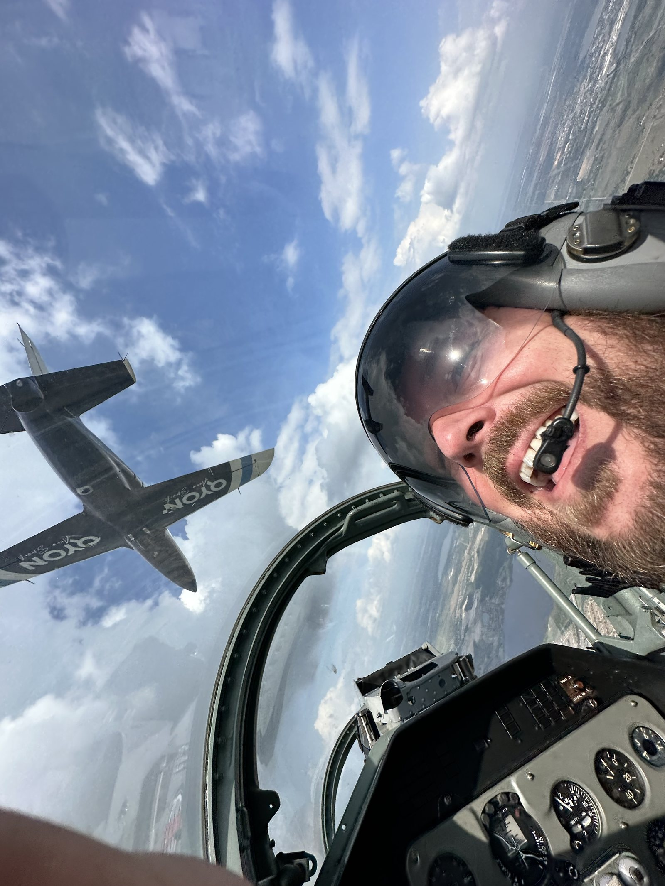

I had built the life I thought I wanted.
I had stopped living inside it.
The companies were growing. The adventures were real. So were the family, the exhaustion, and the distance I had learned not to look at for very long.
From the outside, much of it worked.
I had a wife I loved, three children, a house on a lake, airplanes, motorcycles, a sports car, and a company that had become the eight-hundred-pound gorilla in its small, profitable niche. The businesses produced millions in annual revenue and grew at a pace I once believed would settle something inside me.
I was proud of how much I could carry. My team came to me for answers, and I usually had them. The usefulness felt a lot like worth until the life around the work began showing me the difference.

My brother James died when he was twenty-two.
His death did not change me cleanly or all at once. I tried to keep the beliefs and the pace that had carried me there. Something in me also knew I could not keep calling the life I was living success.
I wanted to know my children as they grew. I wanted more laughter and dancing with my Bride. I wanted the mission inside the companies to continue without requiring the rest of my life as fuel.
It took years. I learned to build systems, hire people around values that were actually true, move authority with responsibility, and stop feeding every part of the company that had learned to depend on me. We moved halfway across the country because the community we wanted for our family mattered enough to change the map.

The work became larger than business and more practical than inspiration.
I began paying closer attention to fear, grief, trauma, the nervous system, the body, relationship, and the state from which I made decisions. I also kept working on roles, money, ownership, systems, calendars, and the ordinary conversations that decide whether a company can change.
A friend eventually asked me to teach him how I had done it. I did not have a neat answer. I had years of mistakes, experiments, support, hard conversations, and a life that was beginning to feel more like one life.
That question became private coaching, the Royals Accelerator, the Mastermind, books, speaking, and a growing collection of practices people can use without me.

I do not think the story ends with getting it right.
I am a founder, husband, father, adventurer, coach, leader, author, and speaker. The order changes with the day. I am still building, still learning, still meeting fear, and still returning to the people and work I want the building to serve.